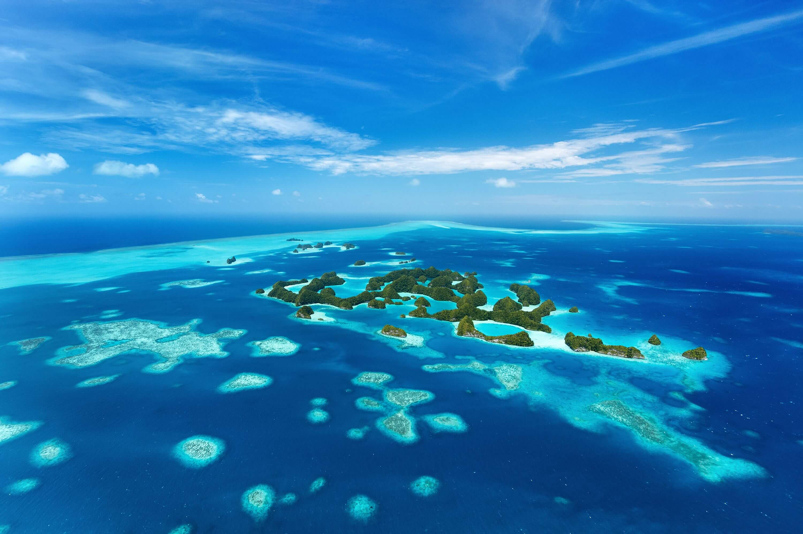
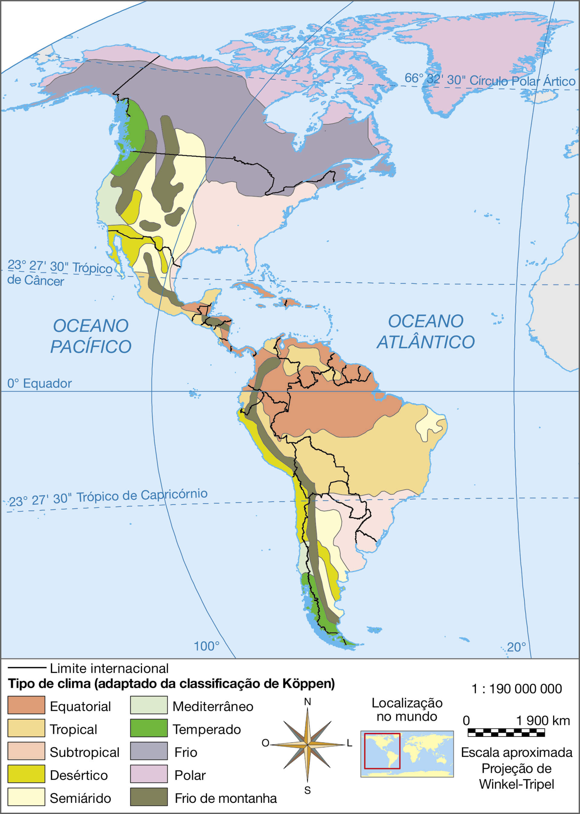
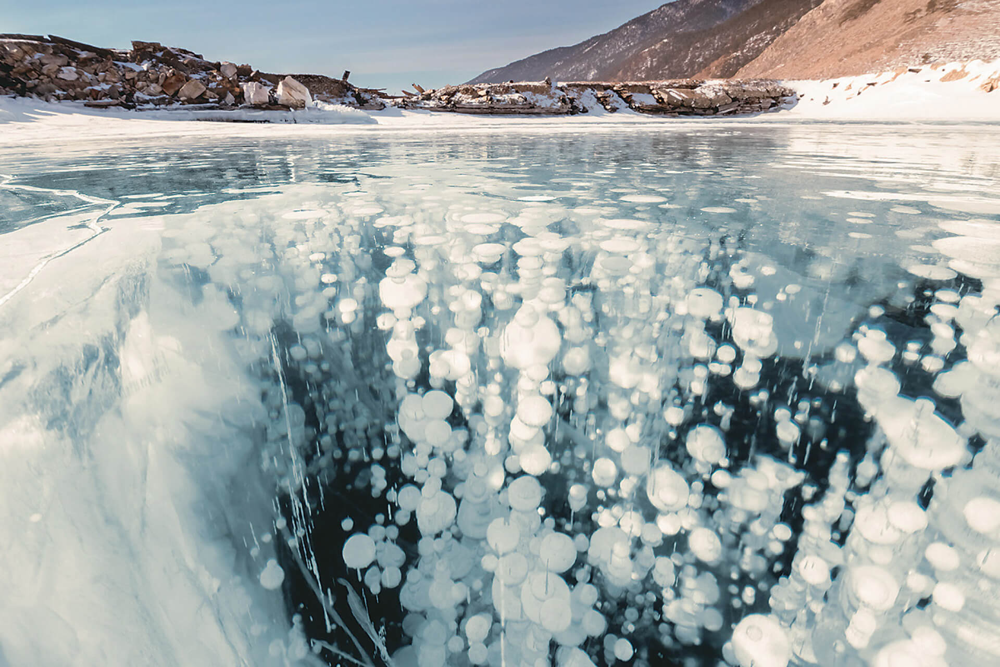
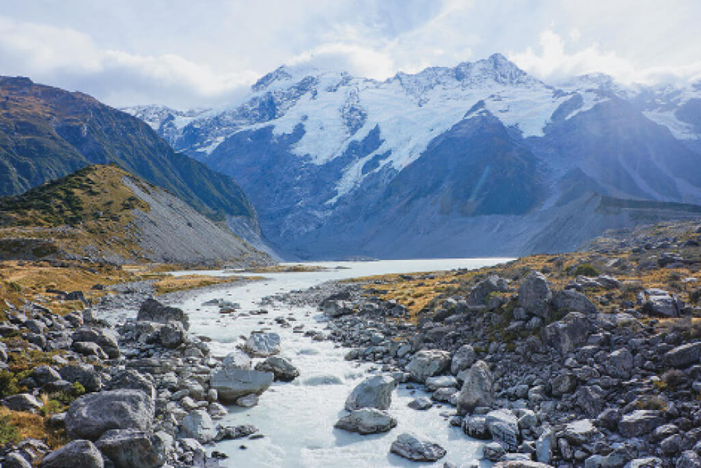
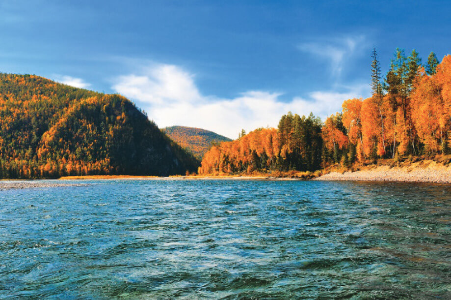
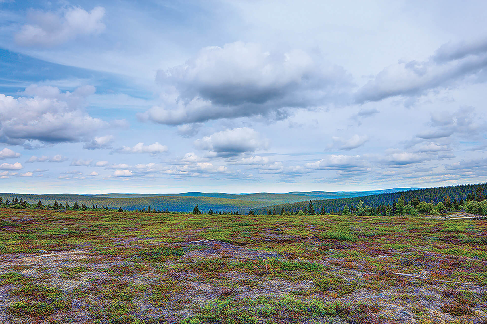
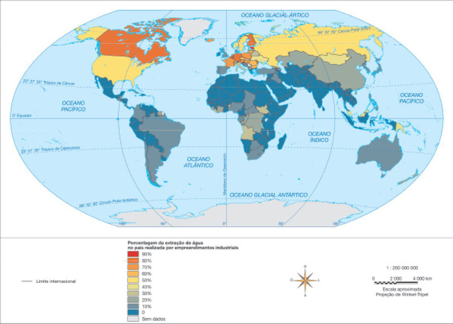
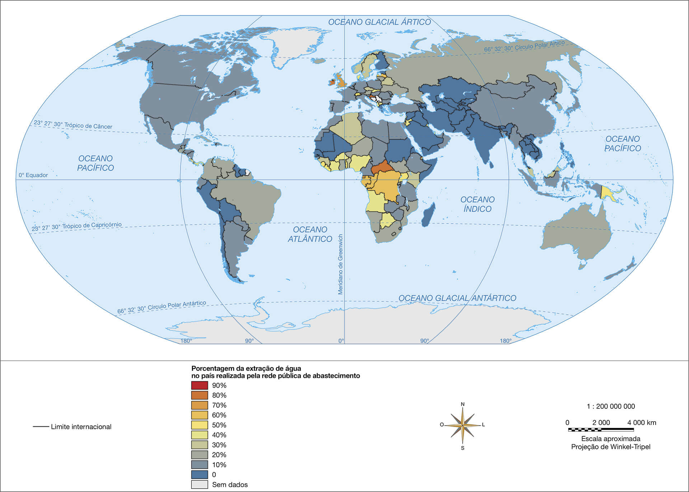

Torres de transmissão de energia e estrada em meio à Floresta Amazônica em Presidente Figueiredo, AM, 2016
As densas selvas que perpassam vários países, entrecortadas por seus rios longos e caudalosos, como o Congo, na África, e o Amazonas, na América do Sul, são cenários que simbolizam a natureza tropical predominante em boa parte da
África e da América. Por outro lado, marcas humanas nessas paisagens também evidenciam a fragilidade desses ambientes diante de empreendimentos de infraestrutura e projetos respaldados pela necessidade do desenvolvimento econômico.
Introdução
Além dos rios citados, o Congo e o Amazonas, e as respectivas florestas que eles percorrem, de que outros domínios naturais da América e África você se recorda?
É possível conservar esses domínios e, ao mesmo tempo, garantir o desenvolvimento socioeconômico? Qual é a sua ideia a esse respeito?
Objetivos
Caracterizar os componentes ambientais da América e da África.
Destacar as inter-relações entre os componentes ambientais desses continentes.
Analisar a questão hídrica como desafio comum que se coloca aos países de ambos os continentes.
Muitas das atuais paisagens naturais dos continentes americano e africano, com suas cordilheiras, vulcões ativos e extintos, florestas tropicais, áreas campestres, grandes desertos e semidesertos, existem há milhões de anos. Tendo se
desenvolvido muito antes da presença do Homo sapiens no planeta, essas paisagens podem aparentar ser estáticas para quem as observa durante o curto período de uma vida humana.
Na verdade, trata-se de paisagens dinâmicas e em constante transformação, mas que se modificam em um ritmo muito mais lento que o das sociedades que interagem com elas. Conforme veremos ao longo deste capítulo e dos próximos, essa
interação e o ritmo de exploração de recursos têm sido frequentemente insustentáveis e colocam em risco a própria existência futura de muitas dessas paisagens como as conhecemos atualmente.
Ao final da Era Paleozoica, há cerca de 250 milhões de anos, por exemplo, formou-se, pelo encontro das massas continentais móveis, o supercontinente Pangeia. Partes dos atuais continentes africano e americano, bem como dos demais,
estavam agrupadas de modo completamente diverso ao formato que conhecemos hoje e cercadas por um vasto oceano. Com o passar das eras geológicas, continentes se encontraram e se separaram, grandes cordilheiras se formaram e muitas delas
foram inteiramente desgastadas pelos ventos, rios e chuvas no decorrer de milhões de anos. Outras permanecem remanescentes atuais de eras antigas, como os Apalaches, na América do Norte.
A formação das atuais grandes cadeias de montanhas, como os Andes e as Montanhas Rochosas (na América) ou a Cadeia do Atlas (na África), se deu nos últimos 100 milhões de anos ou menos, quando os continentes adquiriam formatos próximos
aos atuais. As jovens planícies irrigadas pelos rios em suas bacias, assim como as ainda mais jovens florestas tropicais que conhecemos nesses continentes, surgiram, em sua maior parte, nessa fase mais recente da formação geológica dos
continentes.
Um supervulcão – vulcão enorme capaz de entrar em erupção com consequências devastadoras e de longo alcance – está, há cerca de 70 mil anos, inativo, abaixo do Parque Nacional de Yellowstone. Trata-se de um dos vulcões mais
monitorados do mundo, com uma legião de pesquisadores fazendo medições diárias de sua atividade geológica.
Gêiser no Parque Nacional de Yellowstone, nos Estados Unidos, testemunhando atividade vulcânica e tectônica na porção centro-norte daquele país, 2017.
Percebe-se assim o quão dinâmica é a estrutura rochosa da Terra. De um lado, as forças do interior do planeta – as pressões tectônicas – criam novas superfícies, ao mesmo tempo que desfazem outras. De outro, os agentes externos, como
as chuvas, os ventos, o gelo e a variação térmica, reorganizam e esculpem superfícies.
O processo descrito acima segue ativo ainda hoje, como mostram os terremotos e vulcões resultantes da atual atividade tectônica. Veja, na página seguinte, como uma enorme fenda na região conhecida como Chifre da África tende a se
transformar, no futuro geológico (portanto relativamente distante), em um canal marítimo que a separa do restante do continente.
Conexões
A enorme fenda que pode separar o Chifre da África do resto do continente
BBC Brasil, 02/04/2018
Em Mai Mahiu, um pequeno vilarejo rural no sudoeste do Quênia, a 50 km da capital, Nairóbi, ocorrem há algumas semanas chuvas intensas, inundações e tremores. Mas, em 18 de março, algo estranho aconteceu: a terra começou a se
abrir.
“Minha mulher começou a gritar para os vizinhos, pedindo ajuda para tirar nossos pertences de casa”, contou Eliud Njoroge à agência de notícias Reuters.
Desde então, a fenda no piso de cimento de sua casa não parou de crescer, fazendo com que a família de Njoroge e muitas outras fossem evacuadas.
“As fendas correm quase em linha reta, então, dá para projetar para onde vão. Se você vê uma vindo em sua direção, você sai dali correndo”, disse o geólogo David Adede à Reuters.
A enorme fissura já tem quilômetros de comprimento e alguns metros de largura. Ela está ligada a uma falha tectônica conhecida como Vale do Rift, ou Vale da Grande Fenda, na África Oriental.
Vale do Rift, no Chifre da África

Marilu de Souza
Fonte: IBGE. Atlas geográfico escolar. 7. ed. Rio de Janeiro, 2016. Adaptação.
Segundo os geólogos, esse é um sinal de que, daqui a dezenas de milhões de anos, a África pode ser separada em duas.
[...]
Assim como ocorreu com a América do Sul, separada da África há 138 milhões de anos, os geólogos estimam que chegará um momento em que o Chifre da África também se desprenderá do continente.
O Vale da Grande Fenda se estende por mais de 3 mil km, “desde o golfo de Adén, no norte, até o Zimbábue, no sul, dividindo a placa africana em duas partes iguais”, afirma a geóloga Lucía Pérez Díaz na revista científica The
Conversation.
A pesquisadora do Grupo de Investigação de Falhas Dinâmicas da universidade Royal Holloway defende que “a atividade ao longo da parte oriental do Vale da Grande Fenda, que corre ao longo da Etiópia, Quênia e Tanzânia, tornou-se
evidente quando a grande fissura apareceu repentinamente no sudoeste do Quênia”.
Para Pérez Díaz, a fenda é única no planeta, porque permite observar as diferentes etapas de seu processo de fissura ao vivo.
A fratura mais interessante, escreve, começou na região de Afar, no norte da Etiópia, há cerca de 30 milhões de anos. Desde então, está se propagando rumo ao sul, na direção do Zimbábue, a uma média de 2,5 a 5 centímetros por
ano.
Atualmente em Afar, a camada exterior sólida da Terra, chamada de litosfera, tem sido reduzida a ponto de a ruptura ser quase completa.
Quando a quebra estiver completa, detalha Pérez Díaz, um novo oceano começará a se formar e, “em um período de dezenas de milhões de anos, o leito marinho avançará ao longo de toda a fenda”.
“O oceano inundará e, como resultado, o continente africano ficará menor, e haverá uma grande ilha no Oceano Índico composta por partes da Etiópia, Somália, incluindo o Chifre da África”, afirma.
A ENORME fenda que pode separar o Chifre da África do resto do continente. Disponível em: <https://www.bbc.com/portuguese/internacional-43620442>. Acesso em: 29 set. 2018.
As bases geológicas dos continentes e suas características básicas, como maior ou menor resistência, são importantes para a configuração do relevo, a disposição das bacias hidrográficas e a formação do solo. Este, por sua vez, tem
atuação fundamental nas condições que permitem o desenvolvimento dos diferentes tipos de vegetação, um dos fatores que fornecem umidade ao ar, importante elemento do clima. O clima, por um lado, condiciona a densidade e o porte da
vegetação e, por outro, é influenciado pelo relevo, o qual direciona a circulação das massas de ar.
Vamos ver, nos próximos tópicos, de modo separado, como essa complexa interação entre diferentes aspectos da natureza ocorre tanto no continente americano quanto no africano. Para facilitar o entendimento, vamos separar também os
componentes naturais da paisagem: primeiramente veremos relevo e hidrografia, em seguida, clima e vegetação. Por fim, como forma de sintetizar os aspectos físicos (estudados separadamente) em conexão entre si e com a geografia humana,
estudaremos como se apresenta atualmente a questão dos recursos hídricos na América e na África.
Relevo e hidrografia
Para compreender o papel do relevo e da hidrografia na configuração das paisagens naturais, analisaremos sua disposição e influência em cada continente.
Relevo e hidrografia do continente americano
Ao comparar os mapas físicos da América do Norte e Central com o da América do Sul, podemos constatar que as duas grandes massas subcontinentais setentrional e meridional, conectadas pelo istmo
central, se assemelham em certos aspectos. Em especial, chamam a atenção a localização e disposição das montanhas altas e geologicamente jovens na porção oeste, por um lado, e o predomínio de áreas irregulares de planaltos mais antigos
e menos elevados, com algumas planícies relativamente planas, no centro e leste, por outro. Observe essas características nas imagens abaixo.
istmo: faixa de terra firme, relativamente estreita, que une porções do continente e é cercada de água pelos dois lados.
Imagens de satélite do continente americano revelam seu relevo mais elevado nas porções oeste do continente.
No oeste do continente, próximo à costa do Pacífico, estendem-se as grandes cordilheiras americanas: as Montanhas Rochosas (na América do Norte) e os Andes (na América do Sul), as mais
elevadas. Duas extensas serras situam-se ao sul das Rochosas e dispõem-se entre si paralelamente ao longo do território mexicano: a Sierra Madre Oriental e a Sierra Madre Ocidental. Em meio a centenas de vulcões ativos e outras
montanhas, destacam-se os picos culminantes da América do Norte e da América do Sul: o Monte Denali ou McKinley (no Alasca, EUA), com 6 194 metros, e o Aconcágua (na fronteira entre Argentina e Chile), com 6 962 metros.
cordilheiras: são grandes cadeias de montanhas, superfícies elevadas de topografia irregular, constituídas de picos, geralmente pontiagudos e íngremes vertentes, cuja formação se deve à tectônica de placas da
litosfera.
Durante séculos, as montanhas andinas constituíam parte dos territórios de diferentes povos nativos, denominados, de modo geral, ameríndios. A extração de recursos minerais, desde então, tanto nas montanhas dos Andes quanto nas
Rochosas, representa uma das formas de exploração de seus recursos naturais, conforme veremos no próximo capítulo.
A construção, há mais de 500 anos, de uma antiga e sofisticada infraestrutura ainda hoje remanescente, com cidades e uma rede de vias de circulação nos vales e encostas dos Andes, denota o avanço tecnológico alcançado pelo Império Inca
no passado. Dominando quase toda a região ao final do século XIV e herdando importantes tecnologias de civilizações anteriores, os incas estenderam seu território sobre os demais povos andinos, mas foi desintegrado pela conquista
espanhola no início do século XVI. Atualmente, dezenas de Unidades de Conservação, como Parques Nacionais e reservas florestais, além de sítios arqueológicos significativos, se disseminam nessa região montanhosa, onde muitos
descendentes de antigas civilizações ameríndias vivem até hoje.
Na porção oriental do continente, próxima à costa atlântica, estão as serras formadas de rochas bastante antigas, desgastadas por processos erosivos que perduram por milhões de anos e que ajudam a explicar suas altitudes relativamente
modestas. São os Montes Apalaches, que se estendem desde o sudeste ao nordeste dos Estados Unidos e as serras do sudeste do Brasil, como a Serra do Mar e a Serra da Mantiqueira.
Extração de carvão mineral por meio da remoção do cume, nos Montes Apalaches, em Virgínia, 2012
Partes do relevo, da cobertura vegetal e dos demais elementos naturais dos Montes Apalaches têm sido afetadas principalmente pela mineração de carvão e ferro, há mais de duzentos anos. A extração da fonte de energia que impulsionou o
início da industrialização dos Estados Unidos, ainda no século XIX, contribuiu para o desenvolvimento econômico do país, porém vem causando graves problemas ambientais, além de muitas vezes representar riscos de acidentes com
trabalhadores.
Partes das serras do leste e sudeste do Brasil abrigam áreas remanescentes de uma das florestas pluviais tropicais de maior biodiversidade no mundo: a Mata Atlântica. Desde o século XVII, durante o período colonial, ela vem perdendo
sucessivamente sua área original e, cada vez mais, a lista dos animais e plantas ameaçados de extinção vem sendo ampliada. As monoculturas da cana-de-açúcar, cacau e café, a extração de minérios e madeira de lei, além da intensa
urbanização ao longo dos últimos séculos, desmataram mais de 90% da sua área original.
Os planaltos, tanto os antigos e desgastados pelos processos erosivos quanto os geologicamente jovens e soerguidos pelas pressões tectônicas, abrangem vastas áreas no continente americano. Dentre eles, destacam-se: Planalto do Colorado
e Planalto Mexicano, na América do Norte; Planalto das Guianas, Planalto Brasileiro, Altiplano da Bolívia e Planalto da Patagônia, na América do Sul.
Neles encontram-se desde monumentos naturais esculpidos no decorrer de milhões de anos pelos ventos, chuvas, antigos mares e geleiras a paisagens intensamente urbanizadas, como a Cidade do México. Densamente povoado e importante polo
industrial, o Planalto Mexicano é frequentemente coberto por espessa camada de gases poluentes que cobrem o céu da capital do país e que contribuem para a ocorrência de doenças respiratórias na sua população.
O continente americano é rico em disponibilidade de água, outro importante recurso que também pode ser considerado mineral. Para entender as características hidrográficas desse continente, vamos relembrar que essas são áreas de
drenagem ou escoamento das águas pluviais (provenientes da chuva) que abastecem os rios e seus afluentes. Observe o mapa da próxima página.
As cadeias de montanhas, serras e planaltos onde nascem os rios são divisores de bacias, ou seja, áreas mais elevadas de uma bacia hidrográfica, de onde descem os rios em direção ao vale ou à planície localizados na porção mais baixa
da bacia. As Rochosas e os Andes são os principais divisores de água do continente americano.
Imagens de satélite do continente americano revelam seu relevo mais elevado nas porções oeste do continente
Observe o mapa das bacias hidrográficas do continente e responda:
a) Com relação à porção oeste do continente, embora apresente grandes bacias hidrográficas, muitos de seus principais rios não desembocam no Oceano Pacífico. Como as imagens do relevo do
continente (América: imagens de satélite), podem explicar essa situação?
Nas planícies interioranas da América estão as maiores bacias hidrográficas do continente. A bacia Amazônica, bacia do Mississippi-Missouri e bacia Platina, por exemplo, originaram as extensas planícies que levam seus nomes. Dispostas
predominantemente na porção central do continente americano, destacam-se pela biodiversidade de seus ecossistemas, desenvolvimento da agropecuária e como via de transporte fluvial. Sua formação recente, que data dos últimos milhões de
anos, se deve à deposição de sedimentos retirados e transportados das cordilheiras, serras e planaltos que as cercam. As inundações periódicas, durante a estação das chuvas, seguem construindo a planície. No entanto, o avanço do
desmatamento em áreas da Amazônia e de outras florestas compromete o curso e a vazão dos rios que fluem pelas planícies, devido ao assoreamento.
Assoreamento é a deposição de grande volume de sedimentos que aterra o leito e as margens dos rios, além de parte de seus vales.
Planície do Pantanal Mato-Grossense, formada pelos sedimentos trazidos pelo Rio Paraguai e seus afluentes durante período das cheias (verão), em Poconé, MT, 2017.
A maior e mais volumosa bacia hidrográfica do mundo é a Amazônica. Sua superfície de cerca de sete milhões de km² abrange parte do território de nove países sul-americanos. Seu rio principal, o Amazonas, nasce nos Andes peruanos, em
razão do degelo das neves andinas, a cerca de cinco mil metros de altitude. Seu volume, no entanto, é acrescido com chuvas torrenciais, que caracterizam o clima equatorial. Muitos de seus afluentes estão também entre os mais extensos
cursos fluviais do globo.
O mesmo Rio Amazonas, com características diferentes: à esquerda, próximo das nascentes no Peru, 2014, onde é chamado de Apurímac; à direita, largo e volumoso, na planície do território brasileiro de Belém, PA, 2013
O Mississippi e seu mais extenso afluente, o Missouri, fluem rumo ao sul capturando as águas que descem das Rochosas, a oeste, e dos Apalaches, a leste, para desembocar no Golfo do México. Como via natural situada no centro do
território estadunidense, parte do Mississippi tornou-se uma movimentada rota de transporte de mercadorias produzidas nos belts, os cinturões de cultivos agrícolas especializados (trigo, milho, algodão) dispostos na planície. Na foz em
delta do Mississippi, está a cidade de Nova Orleans. Em 2005, grande parte da cidade foi arrasada ante a passagem devastadora do furacão Katrina.
delta: tipo de desembocadura ou foz de um rio onde há vários canais.
Cena típica do Mississippi: transporte fluvial de bens em St. Louis, EUA, 2016
A bacia Platina é constituída por três importantes rios: Paraguai, Uruguai e Paraná. Este último é o principal entre eles, cujo segmento final, incluindo o estuário, é chamado de Rio da Prata.
De grande importância para os países que fundaram o Mercosul, essa bacia situa-se na região conhecida como cone-Sul e banha superfícies do Brasil, Uruguai, Argentina, Paraguai (os fundadores do bloco) e Bolívia. O caudal de suas águas é
intensamente aproveitado para geração de energia elétrica, bem como para navegação, destinada, sobretudo, ao transporte de mercadorias.
estuário: tipo de desembocadura ou foz de um rio onde há um único canal.
Eclusas para navegação em usina hidrelétrica no Rio Tietê, um dos afluentes do Paraná, em Buritama, SP, 2012
Destacam-se, além dessas, as bacias do Yukon e do Mackenzie na porção norte do continente americano, que deságuam no Ártico e cujos cursos atravessam território canadense. Já na porção sul do continente, há as bacias do Orinoco, na
Colômbia e Venezuela, e a do São Francisco, no Brasil. O Rio Orinoco alcança o Atlântico após percorrer parte do Planalto das Guianas e cruzar trecho da Floresta Amazônica nos territórios venezuelano e colombiano, enquanto o São
Francisco atravessa o Planalto Brasileiro, primeiramente rumo ao norte, posteriormente a leste, após seu curso fazer uma inflexão à direita.
Relevo e hidrografia do continente africano
De um modo geral, os planaltos predominam no continente africano. As planícies ocupam extensões menores e são, em sua maioria, costeiras ou constituindo amplos vales no curso inferior de rios como o Zambeze, Níger, Congo e Nilo. Por
fim, as cadeias de montanhas, menos extensas e elevadas do que as da América, se situam dispersas no noroeste, centro, sul e leste da África. Confira, nas imagens abaixo, a localização das principais formações do relevo africano e como
elas direcionam e delimitam as bacias hidrográficas na África.
Fonte: WORLD atlas reference: everything you need to know about our planet today. 9. ed. London: Dorling Kindersley Limited, 2013. p. XVI. Adaptação.
Originada por dobramento aproximadamente na mesma época dos Andes e das Rochosas, a Cadeia do Atlas estende-se ao longo do Marrocos e de pequena parte da Argélia, região conhecida como Magreb. Por alcançar mais de 4 mil metros de
altitude, algumas montanhas são cobertas de neve mesmo em épocas de calor e, de seu sopé ao sul, na base da cadeia, estende-se o Deserto do Saara, onde as temperaturas se elevam demasiadamente durante o dia.
Outras cadeias de destaque na África são: Drakensberg, na África do Sul e Lesoto; Maciço de Adamawa, na República dos Camarões; Maciço da Etiópia e os vulcões situados no Rift Valley ou Grande Vale da África Oriental, que você
estudou no começo deste capítulo. Nele se situam o Monte Quilimanjaro, o mais alto do continente, com quase seis mil metros de altitude, e grandes lagos formados pelo acúmulo de água sobre falhas geológicas, como Tanganica e Vitória.
Animais e plantas da savana africana, Monte Quilimanjaro ao fundo. Quênia, 2015
No Planalto dos Grandes Lagos, a mais de 1800 metros de altitude, localiza-se a nascente do Nilo, rio africano de maior extensão, em cujas margens desenvolveram-se civilizações como a dos antigos egípcios e outras. Esse rio atravessa o
Saara de sul a norte, com suas águas perenes, até desembocar no delta, às margens do Mar Mediterrâneo.
Assim como ocorre com a foz do Nilo, também o Níger forma um delta em sua desembocadura, que ocorre no Golfo da Guiné, na parte ocidental do continente. Ambas as regiões estão entre as mais densamente povoadas da África.
O segundo rio mais volumoso do mundo, superado apenas pelo Amazonas, é o Congo. Desde sua nascente, nas montanhas diamantíferas da região de Katanga, na República Democrática do Congo, até sua foz, no Atlântico, todo o seu curso segue
pela região equatorial, onde copiosas chuvas descem sobre a floresta e sobre o Rio Congo. Com a elevada temperatura de cada dia, floresta e rio devolvem parte da água no processo de evapotranspiração, alimentando o ciclo hidrológico.
Na região dos Montes Mitumba, no sul e sudeste da República Democrática do Congo, há intensa extração de recursos naturais, principalmente minérios, como ouro, cobre, cobalto e coltan,
essenciais para a fabricação de aparelhos eletrônicos. Há décadas essa exploração tem se baseado no trabalho precário e muitas vezes realizado por crianças. Além disso, motiva conflitos entre diferentes grupos rebeldes locais e o
governo nacional, envolvendo, inclusive, a participação de países vizinhos onde outros grupos rebeldes atuam e, em alguns casos, têm o apoio de potências desenvolvidas. A demanda desses minerais para a fabricação de produtos
tecnológicos em outros continentes é considerada por muitos analistas como um dos fatores que alimentam a violência na região, o que tem pressionado também as empresas fabricantes e os consumidores de países mais ricos a buscar formas
de fiscalização e certificação dos minerais explorados no país, um difícil desafio enfrentado atualmente.
coltan: mineral composto dos minerais columbita e tantalita.
No sul do continente, os rios Orange, que deságua no Atlântico, o Limpopo e o Zambeze, com foz no Índico, são os mais extensos. No rio Zambeze, na região fronteiriça entre Zâmbia e Zimbábue, estão as Cataratas Vitória.
Ponte sobre as Cataratas Vitória, no Rio Zambeze, entre Zimbábue e Zâmbia, 2016
Olhar geográfico
Observe o mapa e a imagem de satélite da África na página 13. Há, no norte e no sul do continente, extensas áreas praticamente sem a presença de rios. Por que isso ocorre? Registre suas ideias nas linhas a seguir.
Fonte: WORLD atlas reference: everything you need to know about our planet today. 9. ed. London: Dorling Kindersley Limited, 2013. p. XVI. Adaptação.
Clima e vegetação
Conforme você vem aprendendo nos seus estudos de Geografia, os elementos naturais que participam da composição dos espaços geográficos, como relevo, hidrografia, clima e vegetação, interagem entre si. Por ora, ressaltamos os tipos
climáticos e as respectivas formações vegetais que se relacionam a eles. O resultado dessas múltiplas interações constitui o que os geógrafos denominam domínios morfoclimáticos, os quais exercem influência sobre a distribuição da
população humana e esta, por sua vez, também interfere na dinâmica dos elementos naturais.
A América se estende desde as proximidades do Polo Norte até próximo à latitude de 60º Sul. Por essa razão, apresenta uma variedade climática maior do que a da África. O continente africano, por sua vez, é o mais quente entre os
continentes. Isso se deve à sua localização centralizada no globo: cerca de 4/5 do seu território está inserido na Zona Tropical, o que lhe garante uma incidência mais direta da radiação solar no decorrer do ano.
Ao comparar a extensão dos continentes e a disposição deles no globo, é possível perceber que a maior parte do continente africano se localiza no interior da faixa intertropical e não atinge em nenhum ponto as latitudes polares. Já o
continente americano, embora também esteja em grande parte no interior da mesma faixa, tem vastas áreas sob domínios extratropicais.
Clima e vegetação da América
Os vários domínios morfoclimáticos do continente americano são extremamente complexos e variados. Abrangem desde florestas temperadas, cuja folhagem se apresenta extremamente colorida em certas épocas do ano, até vegetação rasteira da
tundra, com os tons mais monótonos que caracterizam as paisagens do extremo norte. Passando ainda por desertos como o Atacama, o mais árido do planeta, no Chile e Peru, e pelas selvas úmidas e biodiversas da América do Sul e Central.
Vejamos melhor os diferentes domínios do continente americano. Antes disso, compare o mapa dos climas com o da vegetação desse continente.
América: zonas climáticas

Talita Kathy Bora
Fonte: IBGE. Atlas geográfico escolar. 7. ed. Rio de Janeiro, 2016. p. 58. Adaptação.
América: vegetação

Talita Kathy Bora
Fonte: IBGE. Atlas geográfico escolar. 7. ed. Rio de Janeiro, 2016. Adaptação.
Cartografar
Ao comparar os mapas, é possível perceber algumas correspondências entre os tipos de clima e de vegetação em diferentes partes do continente americano. A esse respeito, faça o que se pede.
A vegetação de coníferas costuma ocorrer em áreas com qual tipo de clima?
Qual tipo de clima e vegetação são predominantes na área mais central do Brasil?
Encontre a localização aproximada de onde você mora. Em seguida, escreva o nome do município, a unidade da federação e o tipo de clima e vegetação que predominam em sua região.
Domínios polares e frios
As características básicas do clima polar, como a predominância de temperaturas negativas no decorrer do ano, a ocorrência frequente de neve com consequente formação de geleiras e a ausência de luminosidade solar por semanas ou até
meses, explicam a escassa presença de formas de vida nas altas latitudes.
As extensas florestas boreais, compostas predominantemente de coníferas, ocupam a maior parte do território canadense e algumas áreas no norte dos Estados Unidos, em especial o Alasca. Com
baixa densidade demográfica e raras áreas urbanas, a floresta boreal é fonte de matéria-prima. Os fartos rios da região são utilizados intensamente, seja para transportar troncos de madeira, destinados a indústrias de papel e celulose,
seja para a geração de energia nas hidrelétricas e indústrias de alumínio, que fazem uso intensivo de água.
coníferas: classe de árvores e arbustos de folhas pontiagudas e sementes que se agrupam em pinhas.
As condições extremas dos climas frio e glacial também são percebidas nas maiores altitudes, nas elevadas encostas dos Andes e das Rochosas, independentemente da latitude em que as montanhas dessas cordilheiras se situem.
Domínios temperados e subtropicais
Situando-se geralmente nas latitudes médias, entre os trópicos e os círculos polares, os ambientes temperados e subtropicais têm variações acentuadas em suas paisagens a cada estação do ano. Por isso, sua amplitude térmica anual,
principalmente no interior dos continentes, nas áreas distantes da costa, é maior do que na maioria das outras regiões.
O clima temperado na América do Norte abrange a maior parte do território dos Estados Unidos e uma parcela do sul do Canadá. Está presente também na porção meridional da América do Sul, no Uruguai e trechos da Argentina, Chile e Brasil
(sul do país). Os domínios temperados apresentam uma grande variedade paisagística, em que se destacam as pradarias e as belezas cênicas das matas de sequoias, na Califórnia (EUA), e das araucárias, no Brasil Meridional e no centro-sul
do Chile.
Parque Nacional das Sequoias, com paisagem tipicamente temperada, Califórnia, EUA, 2017
O uso do solo dos domínios temperados da América se diversifica entre variadas formas de agricultura e pecuária, áreas de silvicultura, centros urbanos e polos industriais de diferentes características. Por isso mesmo, apresenta grande
intervenção das sociedades em diferentes épocas da história, em seus respectivos espaços geográficos.
Domínios tropicais
Do México ao Paraguai, grande parte da América Latina se caracteriza pela tropicalidade de suas paisagens. Nessas áreas de climas quentes e, em geral, úmidos, ainda que apresentem períodos de estiagem, se desenvolvem florestas e
savanas dotadas de notável biodiversidade. Muitos dos recursos naturais tropicais do continente, no entanto, encontram-se ameaçados diante das intervenções humanas. O desmatamento e a poluição causados por práticas insustentáveis de
manejo da terra, expansão das fronteiras agrícolas e projetos de infraestrutura, como estradas, represas ou usinas hidrelétricas nas áreas de savanas e florestas remanescentes, são os principais empreendimentos a exercer pressão sobre
esses ambientes e, por consequência, também sobre os povos nativos que os habitam.
O clima equatorial, com temperaturas elevadas e pequena amplitude térmica ao longo do ano, além de grande volume pluviométrico, se situa no norte da América do Sul. Em grande área dessa região, a leste dos Andes, o calor e a umidade
constante contribuíram para a evolução da Floresta Amazônica. A combinação das massas de ar úmidas vindas do Atlântico com a evapotranspiração da Amazônia originou os “rios voadores”, porções da atmosfera que se deslocam em direção ao
centro-sul do subcontinente, distribuindo parte da umidade proveniente da floresta pelas regiões que ficam no caminho.
Em meio ao cenário de desmatamento das florestas tropicais, estão as áreas preservadas na Costa Rica, país situado na América Central que se destaca pela importante área destinada às Unidades de Conservação, bem como por sediar
pesquisas florestais.
Os obstáculos naturais representados pelas florestas tropicais densas e úmidas, como a proliferação de doenças transmitidas por insetos, ocasionaram inúmeras mortes durante as obras do Canal do Panamá, no fim do século XIX e início do
século XX. Empreendimentos de infraestrutura como esse, por um lado, contribuem para o desenvolvimento das economias nacionais e ajudam a promover o comércio internacional; por outro, causam impactos por vezes preocupantes aos domínios
tropicais.
As savanas, típicas formações arbustivas de clima tropical (marcado pela alternância entre invernos secos e verões chuvosos), são encontradas em parte do território mexicano, venezuelano e também no centro da América do Sul, incluindo
parte do Brasil, nos domínios naturais conhecidos como Cerrado (savana típica) e Caatinga (savana-estépica).
Ponte suspensa compõe caminho turístico sobre o dossel da floresta tropical na Costa Rica, 2016
Ao longo dos trópicos, são encontrados desertos e semidesertos no continente americano. No norte do México e Sudoeste dos Estados Unidos, situam-se os desertos da Grande Bacia. Além de formas de relevo surpreendentes forjadas pela
erosão, esses desertos e suas cercanias guardam vestígios arqueológicos de populações que se abrigavam em moradas abertas nas encostas e obtinham sua subsistência em condições climáticas provavelmente menos áridas.
Paisagem desértica no Monument Valley, Arizona, EUA, 2015
Na América do Sul, encontram-se o gélido Deserto da Patagônia, no sul da Argentina, parcialmente coberto por formações rasteiras e arbustivas, e o do Atacama, no norte do Chile e sul do Peru, o mais seco de todos os desertos da Terra,
como já vimos. A pouca umidade que se forma em sua atmosfera decorre em parte da presença da Corrente de Humboldt a oeste desses países, próximo à costa. Trata-se de uma corrente marítima no Pacífico que, por ser fria, desfavorece a
evaporação das águas que propiciariam a formação de nuvens sobre o continente.
De outra parte, a leste, estende-se a Cordilheira dos Andes, que atua como barreira a impedir que as massas de ar úmidas vindas do Atlântico e da Amazônia passem para o outro lado. Conforme veremos no próximo capítulo, do subsolo do
Atacama extraem-se algumas das principais fontes de renda do Chile, como o cobre.
Com a Cordilheira dos Andes ao fundo, estrada corta o Deserto do Atacama, Chile, 2017
Um voo sobre a África de norte a sul, desde a Tunísia ao Cabo da Boa Esperança, na África do Sul, permite visualizar uma sucessão sequenciada de domínios. Dos desertos à floresta equatorial e destas, de volta aos desertos.
África: vegetação
Talita Kathy Bora
Fonte: IBGE. Atlas geográfico escolar. 7. ed. Rio de Janeiro, 2016. Adaptação.
África: zonas climáticas

Talita Kathy Bora
Fonte: IBGE. Atlas geográfico escolar. 7. ed. Rio de Janeiro, 2016. p. 58. Adaptação.
Cartografar
Ao comparar os mapas, é possível perceber algumas correspondências entre os tipos de clima e de vegetação em diferentes partes do continente africano. A esse respeito, responda às seguintes questões:
Se fizéssemos uma viagem, partindo da Linha do Equador, aproximadamente no centro do continente, rumo ao Estreito de Gibraltar, no Marrocos, extremo norte da África, quais climas e vegetações encontraríamos pelo caminho?
Se fizéssemos outra viagem, partindo do mesmo local, mas desta vez direcionando-se à Cidade do Cabo, na África do Sul, extremo meridional da África, quais climas e vegetações encontraríamos pelo caminho?
Domínios de tipo mediterrâneo
Algumas regiões do globo, entre as quais o centro do Chile, parte da Califórnia, no oeste dos EUA, e o sudoeste da África do Sul, apresentam clima e vegetação mediterrâneos. A designação se explica pelo fato que essas localidades
exibem uma característica climática peculiar: ao contrário do que ocorre na maior parte dos domínios naturais, em especial os tropicais, o verão é seco e o inverno, chuvoso. Como foi nas costas e ilhas do Mar Mediterrâneo que os
europeus, nas primeiras classificações climáticas de séculos atrás, observaram essa característica pela primeira vez, denominou-se assim o tipo climático da região, mesmo quando ocorre em locais distantes.
Essa combinação possibilitou o desenvolvimento de um tipo de vegetação arbustiva e esparsa, também denominada de maquis. Tais condições ambientais propiciaram, há centenas de anos, a cultura de oliveiras, que produzem olivas (ou
azeitonas), e de parreiras, que produzem uva.
Geralmente localizados próximos aos litorais, os domínios mediterrâneos são quase sempre grandes atrativos turísticos.
Entre as linhas que formam os Trópicos de Câncer, ao norte, e Capricórnio, ao sul, estendem-se as maiores áreas desérticas da África.
O Saara, maior deserto do mundo, é limitado pela Cadeia do Atlas a oeste, quase no Atlântico ao Mar Vermelho, no leste. Muito pouco povoado e dominado pela influência cultural árabe, o Deserto do Saara ainda conserva certos cenários
milenares, como as caravanas de comércio que o cruzam e os povos de tradição nômade e guerreira, como os tuaregues, muitos dos quais atualmente sedentarizados em cidades em vilas de diferentes países da região.
Caravana de camelos cruza o Deserto do Saara no Marrocos, 2016
O Deserto da Namíbia e o semideserto do Kalahari estão na porção meridional do continente. No Kalahari, durante a breve temporada de chuvas, observam-se manadas de animais em sua migração anual rumo ao delta do Rio Okavango, que surge
periodicamente todos os anos e desaparece alguns meses depois. Trata-se de um delta situado em meio ao continente e não, como de praxe, na foz do rio junto ao mar. Fenômeno raro, as águas do delta do Okavango, após atravessarem o
deserto, desaparecem sob as areias do Kalahari.
Delta do Okavango em época de cheia, quando a paisagem semiárida se transforma e floresce, Botsuana, 2013
O Sahel, cujo significado em árabe é “fronteira”, corresponde a uma faixa de clima semiárido e de vegetação de estepe situada na orla meridional do Deserto do Saara.
O crescimento demográfico da população e o uso intensivo do solo para a agricultura de subsistência e pastoreio têm contribuído para a desertificação da região. Trata-se de um grave problema socioambiental para toda a longa área que
atravessa latitudinalmente a África.
Paisagem do Sahel, transição entre o Deserto do Saara e os ambientes de savana mais ao sul.
As paisagens naturais mais conhecidas da África mundo afora são, certamente, as da savana. Situada entre as estepes semiáridas que margeiam desertos e a floresta equatorial no centro do continente, a savana se desenvolve principalmente
sobre os planaltos campestres e vales da África Oriental.
Veículo de passeio turístico percorre a savana no Parque Nacional de Serengeti, na Tanzânia, 2016
O clima que corresponde à formação das savanas africanas é o tropical típico, definido por duas estações bem diferenciadas: o verão chuvoso e o inverno seco.
Na região equatorial da bacia do Rio Congo, estende-se a mais densa floresta africana. Ameaçada pela expansão da mineração, extração de madeira e empreendimentos agropastoris, ela abrange desde Ruanda e Burundi até o Gabão e Camarões.
Florestas tropicais úmidas são encontradas ainda no sudeste do continente, em Moçambique e parte oriental da ilha de Madagascar, e no entorno do Golfo da Guiné, entre a Nigéria e Costa do Marfim.
Formações calcárias pontiagudas em meio à floresta de Madagascar, 2016
Relacione as características climáticas e paisagísticas a seguir com seus respectivos tipos climáticos.
( 1 ) Árido
( 2 ) Semiárido
( 3 ) Polar
( 4 ) Frio
( 5 ) Frio de montanha
( 6 ) Temperado
( 7 ) Mediterrâneo
( 8 ) Subtropical
( 9 ) Tropical
( 10 ) Equatorial
Temperaturas abaixo de 0 °C na maior parte do ano. Neve e geleiras.
Embora situado na zona temperada, apresenta verão quente e seco.
Raras chuvas e grande variação de temperaturas entre dia e noite.
Quatro estações bem caracterizadas. Temperatura média anual amena.
Pouca amplitude térmica durante o ano. Quente e muito úmido.
Invernos rigorosos com frequentes quedas de neve e verões amenos.
Curto período com poucas chuvas. No resto do ano, seco e quente.
Transição entre o temperado e o tropical. Em geral, úmido.
Baixas temperaturas, devido à altitude. Mudanças constantes de tempo.
Quando no interior do continente, apresenta duas estações: chuvosa (verão) e seca (inverno). Quente no ano todo.
Clima e vegetação estão extremamente ligados. Associe alguns dos tipos de vegetação presentes na América, África ou em ambos os continentes com os tipos climáticos indicados no item anterior. Use a mesma numeração.
Floresta Equatorial, densa e úmida.
Estepes e savanas com plantas, em geral, esparsas.
Pradarias, bosques e matas temperadas.
Desertos.
Savanas no interior dos continentes e florestas, em geral, costeiras.
Floresta boreal ou de coníferas.
Vegetação arbustiva. Em certas regiões, destacam-se as oliveiras.
Redução no porte da vegetação à medida que aumenta a altitude.
Tundra e desertos glaciais (cobertos por geleiras continentais).
Matas de araucárias e de espécies que se adaptam a climas tropical e temperado.
A questão dos recursos hídricos
A água é um recurso mineral fundamental para o desenvolvimento da vida como a conhecemos. É por isso que os astrobiólogos, cientistas que buscam vestígios de seres vivos (principalmente
micróbios, bactérias e outras formas elementares de vida) em outros planetas ou em suas luas, tanto dentro como fora do Sistema Solar, procuram por água, especialmente no estado líquido – o que foi verificado pela primeira vez em 2016,
no planeta Marte, mas sem a confirmação de vestígios de vida.
Astrobiologia é uma área de pesquisa científica surgida recentemente com base na astronomia e na biologia. De acordo com o Instituto de Astronomia, Geofísica e Ciências Atmosféricas da USP (IAG), a astrobiologia,
valendo-se de uma abordagem interdisciplinar, investiga a origem, distribuição, evolução e futuro da vida no Universo, em conexão com o ambiente astronômico.
No planeta Terra, entretanto, a água é abundante, porém distribuída de maneira extremamente irregular pelos continentes e territórios nacionais. Estima-se que no planeta inteiro exista cerca de 1,5 bilhão de km³ de águas superficiais.
No entanto, 60% dessa soma se concentra em apenas nove países, um deles o Brasil, que dispõe sozinho de 12% daquele volume. Por outro lado, há regiões em que os índices de precipitação são inferiores aos de evapotranspiração, como nos
desertos e em seus entornos. Nesses casos, registra-se uma situação de déficit hídrico.
No Deserto do Saara, tuaregues retiram água de poço no Mali, 2011
Conhecer os locais mais viáveis para obtenção de água subterrânea nos desertos é estratégico às populações locais.
Cerca de 97,5% da água existente no planeta encontra-se nos mares e oceanos. Dos menos de 3% restantes, mais de dois terços está congelada, especialmente na Antártica, e pouco menos de um terço encontra-se em aquíferos subterrâneos.
Estes, por conta do difícil acesso ou pelas propriedades inadequadas para consumo, podem exigir altos custos de perfuração e tratamento, tornando a exploração muitas vezes pouco viável ou insustentável.
Assim, menos de 1% de toda a água doce da Terra (lembrando que esta constitui apenas 2,5% da água total do planeta) está disponível para uso humano em rios, lagos, etc. Mais precisamente, as reservas de água doce disponíveis para
consumo imediato representam apenas 0,016% do total, aproximadamente, o que inclui toda a água presente na atmosfera, rios, lagos e lençóis freáticos do mundo somados.
Temos que considerar, ainda, que boa parte dessa pequena parcela se encontra afetada pelas ações antrópicas, que exercem forte pressão sobre os recursos hídricos existentes. Isso ocorre, especialmente, quando os índices de consumo e
poluição excedem a capacidade de renovação do recurso, seja de forma natural, seja por meio de estações de tratamento.
Nesse contexto, exemplos de locais que têm apresentado quadro preocupante são recorrentes nos continentes americano e africano. Locais como a Califórnia, estado mais rico dos Estados Unidos, a Cidade do México, que vimos anteriormente,
ou a Cidade do Cabo, metrópole sul-africana famosa por seus pontos turísticos e sofisticada infraestrutura urbana, passaram por períodos de racionamento e episódios de risco de esgotamento hídrico nos últimos anos e se encontram
atualmente em busca de maneiras de evitar maiores problemas no futuro. Também no Brasil essa situação ocorre em grandes centros urbanos como São Paulo (SP), Salvador (BA) e a capital, Brasília (DF).
O Sistema Cantareira, que abastece a cidade de São Paulo, SP, alcançou uma situação crítica no ano de 2015, quando uma seca severa atingiu o estado, comprometendo o fornecimento público de água em alguns bairros e períodos.
A metrópole estadunidense, localizada em meio ao deserto, é dependente do lago Mead e da bacia do Colorado para o abastecimento hídrico e aplica leis severas contra o desperdício, cobrando altos valores pelo fornecimento, em
especial dos maiores consumidores, como os hotéis luxuosos que fazem a fama da cidade.
Com base nos dados de 2017, a escassez de água atinge cerca de 460 milhões de pessoas ao redor do mundo, as quais vivem com menos de cinco litros de água por dia, e 29 países têm algum tipo de problema decorrente da falta de água.
Apesar disso, o consumo doméstico ainda responde por proporção minoritária do consumo mundial, cerca de 10% apenas. Segundo a FAO, aproximadamente 70% da água consumida no mundo se destina à agricultura, na irrigação das lavouras,
enquanto as atividades industriais utilizam 22% do total da água consumida.
Essas proporções, entretanto, constituem médias mundiais. Dessa maneira, omitem as enormes variações que existem entre os países. Analise os mapas a seguir para compreender como se distribui o consumo de água nas diferentes regiões do
mundo. Neles, é possível perceber claramente que:
a porcentagem de extração de água realizada pelas redes públicas de abastecimento para o consumo doméstico sofre variação menor que o consumo agropecuário e industrial;
os países localizados mais ao sul no globo, o que abrange a maior parte dos países emergentes ou em desenvolvimento, exibem índices mais altos de extração de água para uso em empreendimentos agropecuários;
os países localizados mais ao norte no globo, o que abrange a maior parte dos países considerados mais ricos ou economicamente desenvolvidos, apresentam índices mais altos de extração de água para uso em empreendimentos
industriais.
América e África: dependência de recursos hídricos externos

Talita Kathy Bora
Fonte: ALMEIDA, Rodolfo; MAIA, Gabriel. Acesso, dependência, usos: a situação da água no mundo, em 6 mapas. Disponível em:
<https://www.nexojornal.com.br/grafico/2018/03/20/Acesso-depend%C3%AAncia-usos-a-situa%C3%A7%C3%A3o-da-%C3%A1gua-no-mundo-em-6-mapas>. Acesso em: 28 maio 2018. Adaptação.
Extração de água para uso agropecuário

Talita Kathy Bora
Fonte: ALMEIDA, Rodolfo; MAIA, Gabriel. Acesso, dependência, usos: a situação da água no mundo, em 6 mapas. Disponível em:
<https://www.nexojornal.com.br/grafico/2018/03/20/Acesso-depend%C3%AAncia-usos-a-situa%C3%A7%C3%A3o-da-%C3%A1gua-no-mundo-em-6-mapas>. Acesso em: 2 out. 2018. Adaptação.
Extração de água para uso industrial

Talita Kathy Bora
Fonte: ALMEIDA, Rodolfo; MAIA, Gabriel. Acesso, dependência, usos: a situação da água no mundo, em 6 mapas. Disponível em:
<https://www.nexojornal.com.br/grafico/2018/03/20/Acesso-depend%C3%AAncia-usos-a-situa%C3%A7%C3%A3o-da-%C3%A1gua-no-mundo-em-6-mapas>. Acesso em: 2 out. 2018. Adaptação.
Com o comprometimento de numerosas fontes naturais de água, por um lado, e a demanda crescente, por outro, aumenta a necessidade de capital para seu tratamento, o que a torna muitas vezes um recurso cada vez mais caro e menos
garantido, conforme evidenciam os exemplos que vimos.
Assim, estabelecer um planejamento logístico eficaz para o uso dos recursos hídricos constitui um desafio para qualquer país. Muitas vezes os rios, lagos e aquíferos são transfronteiriços, exigindo uma gestão compartilhada que, se não
for realizada com diplomacia, ou seja, por meio de diálogos e negociações entre os governos envolvidos, pode resultar em tensão geopolítica entre países vizinhos ou próximos. Veja no mapa como se configura essa realidade na América e na
África.
Extração de água para uso doméstico

Talita Kathy Bora
Fonte: ALMEIDA, Rodolfo; MAIA, Gabriel. Acesso, dependência, usos: a situação da água no mundo, em 6 mapas. Disponível em:
<https://www.nexojornal.com.br/grafico/2018/03/20/Acesso-depend%C3%AAncia-usos-a-situa%C3%A7%C3%A3o-da-%C3%A1gua-no-mundo-em-6-mapas>. Acesso em: 2 out. 2018. Adaptação.
Olhar geográfico
Um foco histórico de tensões no continente africano é a bacia do Rio Nilo, cujas águas são utilizadas e disputadas entre Egito, Sudão, Etiópia e Sudão do Sul. Localize o percurso desse rio no mapa África: principais bacias
hidrográficas e verifique a situação dos quatro países mencionados. Como a trajetória do rio pode explicar situações tão distintas na mesma bacia?
Gestões inadequadas podem produzir problemas socioambientais de grande magnitude, como no caso do lago Chade. Localizado no centro-norte do continente africano, nas fronteiras entre Chade, Níger, Nigéria e Camarões, vem apresentando
drástica redução. Em virtude da utilização não planejada de suas águas para projetos de irrigação desde as décadas de 1970 e 1980, da construção de represas para usinas hidrelétricas nos rios que o alimentam e da progressiva redução das
chuvas na região, ocupa atualmente entre 10 e 20% de sua área original. No contexto mais geral da bacia do lago Chade, essa situação tem contribuído para agravar os conflitos étnicos e religiosos existentes na região, como disputas
entre pecuaristas e agricultores pelos recursos hídricos ou a presença de grupos fundamentalistas que praticam o terrorismo, como o Boko Haram.
O lago Chade, um dos únicos locais do Saara que apresenta água em abundância, está desaparecendo em razão das ações antrópicas. Na última imagem é possível comparar os níveis de 2016 com os de 1963, destacados em azul.
A América, em parte por ter menor área de terras afetadas pela escassez, apresenta menos problemas diplomáticos internacionais relacionados à água. Em geral, o compartilhamento de importantes corpos-d’água vem ocorrendo de modo
pacífico e negociado, como no caso dos Grandes Lagos, entre os Estados Unidos e o Canadá, e o lago Titicaca, entre o Peru e a Bolívia, ou o Aquífero Guarani, que atinge Brasil, Paraguai, Argentina e Uruguai.
Mesmo o controle sobre a bacia Platina, motivação de numerosas disputas históricas, foi resolvido de maneira satisfatória na década de 1980, por meio de acordos e tratados que resultaram na construção da Usina Hidrelétrica de Itaipu
(no Rio Paraná), também denominada Itaipu Binacional (pois envolve a parceria entre Brasil e Paraguai), a maior de sua época. Mesmo assim, episódios relacionados a fábricas de papel localizadas às margens de um dos afluentes da bacia, o
Rio Uruguai, pelo país de mesmo nome, gera tensões diplomáticas ocasionais com a Argentina, que alega sofrer danos ambientais.
Um problema comum à África e à América Latina, no que diz respeito à acessibilidade da água potável por todos os segmentos da população, são os elevados índices de pobreza e desigualdade. Eles se refletem diretamente na precariedade do
saneamento básico. Em diversos países, boa parte dos dejetos e dos esgotos ainda é lançada diretamente nos leitos dos rios, sem o devido tratamento.
No Brasil, assim como em muitos países, tem crescido o debate em torno das questões hídricas e do abastecimento sustentável das cidades e atividades econômicas. Nesse cenário, a atuação de empresas privadas na gestão da água e do
esgoto, vista como agravante dos problemas por alguns e como parte da solução por outros, tem gerado controvérsias. Independentemente das posições políticas, é importante ter em mente que não existem soluções e modelos prontos para
serem aplicados em qualquer situação, pois os diferentes contextos de escassez exigem soluções próprias. Confira alguns argumentos desse debate na reportagem a seguir.
Palafitas, moradias que não contam com saneamento básico, Recife, PE, 2014
A crescente atuação de empresas privadas na gestão de água e esgoto
Participação do setor privado no setor é defendida como saída para falta de recursos públicos. Especialistas defendem regulação e controle.
Um dos debates mais aquecidos com relação à água diz respeito à atuação de entes privados no setor, tanto na distribuição quanto no saneamento.
De um lado, quem defende a entrada de mais empresas particulares aponta que o estado não tem condições de, sozinho, atender à demanda por acesso e expansão da rede.
Na outra ponta, críticos expressam preocupação com relação a privatizações descuidadas e que não contemplam o interesse público.
[...]
A distribuição de água e esgoto
Dados de 2015 do Instituto Trata Brasil mostram que 83,3% dos brasileiros contam com água encanada, mas apenas 50,3% têm esgoto. Somente 42,67% dos esgotos coletados no País são tratados.
Em algumas partes do país, a situação é ainda mais dramática: na região Norte, 49% da população conta com abastecimento de água, e apenas 7,4%, com esgoto.
“Isso tem a ver com a maneira como o modelo evoluiu no Brasil”, afirmou ao Nexo Marussia Whately, arquiteta e urbanista com especialização em gestão de recursos hídricos. “Sempre se investiu muito mais em água do que em saneamento,
pois água dá muito mais dinheiro.”
[...]
Defensores da ampliação das empresas privadas nos setores de água e saneamento argumentam que o poder público não tem condições financeiras de realizar as obras necessárias.
Segundo dados da Abcon (Associação Brasileira das Concessionárias Privadas de Serviços Públicos de Água e Esgoto), investimentos da iniciativa privada em saneamento foram responsáveis por 20% do total aplicado no setor em 2015,
mesmo que sua presença esteja restrita a 5% dos municípios e acessível para apenas 15% da população.
Um relatório da associação cita entre seus exemplos bem-sucedidos a região dos Lagos, no Rio de Janeiro. Em 2001, só 0,8% dos habitantes tinha esgoto. Em 2015, depois de 14 anos em que a gestão foi realizada pela privatizada
Prolagos, o índice cresceu para 60,07%. [...]
Na década de 1990, teve início a privatização de empresas de água e esgoto. De acordo com dados de 2016 da Abcon, concessionárias privadas estão presentes em 322 municípios (em 18 estados) e beneficiam mais de 30 milhões de
pessoas.
Dos municípios atendidos pela iniciativa privada, 72% são de pequeno porte, com população de até 50 mil habitantes. No total, essa participação ainda é pequena: 5% do abastecimento de água, coleta e tratamento de esgoto no país são
administrados por concessionárias privadas.
“É bom que existam investidores, que façam o que o poder público tem sido incapaz de fazer”, afirmou ao Nexo o ambientalista Rodrigo Agostinho, que foi prefeito da cidade de Bauru, interior de São Paulo, entre 2001 e 2008. “Mas que
haja regulação, controle, monitoramento e transparência. No contrato, deve estar previsto quais as obras necessárias em cada ano, quais bairros serão atendidos, que haja um projeto claro de investimento.”
[...]
ROCHA, Camilo. A crescente atuação de empresas privadas na gestão de água e esgoto. Disponível em:
<https://www.nexojornal.com.br/expresso/2018/03/24/A-crescente-atua%C3%A7%C3%A3o-de-empresas-privadas-na-gest%C3%A3o-de-%C3%A1gua-e-esgoto>. Acesso em: 2 out. 2018.
Apesar de contar com enormes bacias hidrográficas, como a Amazônica e a Platina, e abundantes reservas de água subterrânea, como o aquífero Alter do Chão, na Amazônia, e a maior parte do Guarani, o Brasil tem sido palco de recorrentes
episódios de crises de abastecimento. Além de períodos chuvosos que têm se revelado muitas vezes menos intensos que o esperado, o elevado consumo de grandes centros urbano-industriais e o excessivo uso para irrigação nas lavouras
contribui para a ocorrência de episódios de escassez hídrica. Esse problema, antes associado ao semiárido nordestino, atualmente ameaça afetar cada vez mais, durante os invernos secos, várias localidades também no Sudeste e
Centro-Oeste. Com o agravante de que, sendo as usinas hidrelétricas dessas regiões responsáveis por gerar boa parte da eletricidade que abastece as grandes cidades do país, cenários com secas mais intensas no Brasil costumam impactar
também o fornecimento de energia para esses locais e suas indústrias.
Reservatório da Usina Hidrelétrica de Três Marias, no Rio São Francisco, MG, durante período prolongado de seca, em 2014
Anote nos quadros abaixo palavras-chaves que exemplifiquem o que você aprendeu em relação às principais paisagens naturais dos continentes americano e africano.